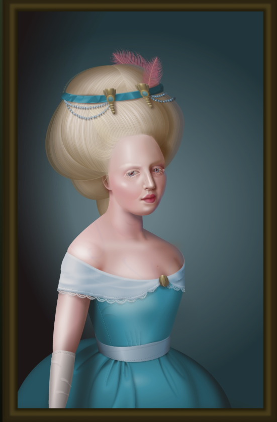

Vad har jag hållt på med tidigare?
Jag läser 3D-modellering
Samtidigt som denna här utbildningen så lär jag mig att 3D modellera på en kurs på Gävles universitet, i en låmngsammare takt än denna. Jag har alltid varit intresserad av 3D, VR och grafisk design. En dröm är att få designa möbler/konst i blender och arbeta med 3D printer. Eller gränssnitt för bil-pekskärmar, jag har svårt att bestämma mig... Men tänker att allt är möjligt och desto mer man kan desto större tillgång är jag.

Jag har pluggat frontendutveckling
Tog examen i Frontendutveckling med säkerhetsinriktning, från Jensens Yrkeshögskola sommaren 2022, sökte en massa jobb men kom aldrig hela vägen. Tappade engagemang och motivation, men jag tror jag hitatt den igen. Här hade jag två LIA - bland annat beautyqlick.com, där jag och VD jobbade mycket ihop för en enhetlig design. Jag skrev ett fördjupningsarbete i CSS som medel för konst som examensarbete.
Jag har jobbat som rammakare
Väldigt kul arbete, väldigt otrevlig chef. Skapandet av en tavla är som en analog version av enkel CSS, det börjar med en bild - ett html element/"tom ruta" - man lägger på passepartout och ramar och jobbar in på millimeter nivå för att det ska bli angenämt för ögat.
Jag jobbade på VREX
VR-spelklubb, jag jobbade i repan - tog emot kunder, gjorde kaffe, presenterade spel och upplägg. Fick ibland en gadget att skruva isär eller fixa.
Min Github
Den har inte mycket, speciellt inte från senaste året. Nästan pinsamt.